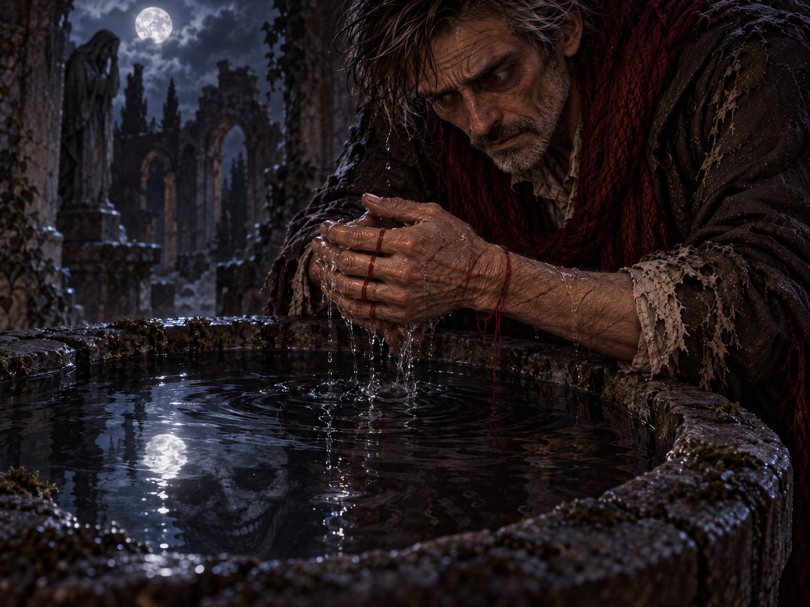

Персонаж для «Проклятия Страда»
Филипп
Чародей дикой магии под пятьдесят. Человек, который помнит свою трагедию неправильно.
«Вы слышите? Кто-то смеётся».
Выберите карту
-

Повесть
«Руки должны быть чистыми». Вся правда о человеке, который забыл, кем был. Откроется на 10 уровне.
под паролем -

Для мастера
Правда о прошлом, люди из прошлого, правило приступов и пароли страниц памяти.
под паролем -

Для игроков
Странник в углу таверны: каким его видят, что о нём болтают, и страницы памяти, которые открываются с каждым уровнем.
открыто всем
Игрок: Алексей. Арты сделаны в Scenario.